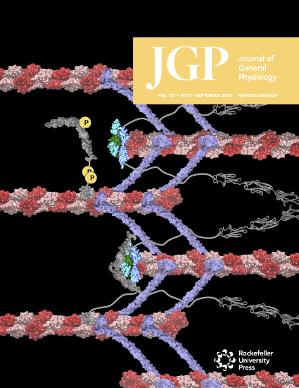

Research • PublishedGSK3β-driven Phosphorylation of ABLIM1
Investigating how GSK3β-driven phosphorylation regulates the interactions of actin-binding LIM protein 1 (ABLIM1) with titin in cardiac muscle using molecular dynamics simulations and biophysical modeling.